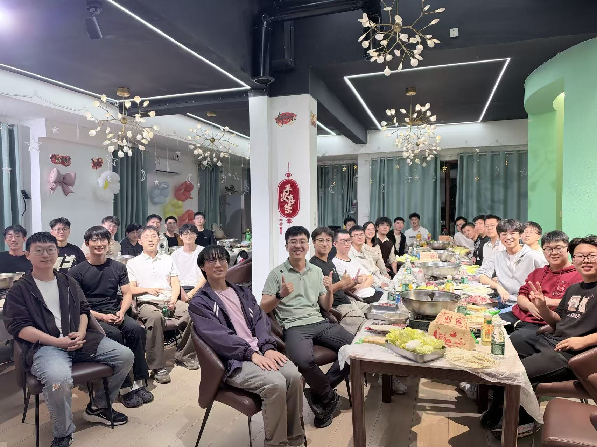

About me
I am a professor in Department of Computer Science at Tianjin University and a member of TANK Lab, led by Prof. Keqiu Li. I received my Ph.D. degree from Networked Systems Lab at University of Southern California. I obtained my B.S. degree at Shanghai Jiao Tong University.
My research interests include agentic systems, large language model (LLM) systems, and AI for Science (AI4Science). In collaboration with research institutions like IBM Watson, Samsung Research and Microsoft Research, I have published tens of papers at the leading conferences/journals, including Nature, ASPLOS, EuroSys, SoCC, Ubicomp, INFOCOM, IWQoS, SIGCOMM, TPDS and TC. My research is funded by NSFC Young Scientists Fund (Category B), and I have received honors such as U35 Outstanding Talent Award from Tianjin University and Best Paper Award from ACM SoCC'24. I have served as a program committee member for conferences such as INFOCOM, ISCA and HPCA, and am an associate editor for IEEE Transactions on Computers.

I have developed Twen.ai, a university Q&A large language model. Empowered by RAG techniques, Twen addresses daily questions from students and faculty in areas such as daily life, scholarship selection, further studies, etc. Twen was officially released in April 2024 and has since served thousands of requests each day. I am also developing Xiaotian, the official AI mentor that is available to all students at Tianjin University since September 2025.
Join our research group. I am looking for self-motivated students interested in building systems for large language models and AI for Science. If you are interested in working with me, please read this document.
Recent News
- Nov 2026ReWY is now available! It streamlines Delta-Rule Attention backpropagation in hybrid models, reducing local WY backward matrix multiplications from 7 to 3 and reusing shared gradient intermediates. It accelerates DeltaNet, GDN, KDA, and GDN2 operators by 1.25–2.89× on NVIDIA GPUs and Ascend NPUs. The paper and code are publicly available—give it a try! Paper · Code.
- Nov 2026Invited to serve on the Program Committee of ISCA 2027 (CCF-A). Looking forward to contributing to the computer architecture community!
- Oct 2026
- Aug 2026OLED-MoE has been accepted to EuroSys 2027. Congratulations to Jingyuan and Jiayue! For memory-constrained MoE-based diffusion LLMs, it exploits expert locality across adjacent denoising iterations to predict and retain high-value experts, reducing CPU–GPU transfers and cache thrashing for faster inference. The paper and code are publicly available. Paper · Code.
- Aug 2026
- Aug 2026My proposal has been approved for support from the NSFC Young Scientists Fund (Category B). Grateful for the support for our research!
Earlier news
- Jun 2026Congratulations to my master’s students Chen Shen and Ziqi Gong on their graduation! Thank you for your hard work and contributions to our group. Wishing you both all the best for the future!
- May 2026Mosaic and KernelBand have been accepted to ICML 2026, advancing long-context diffusion LLM inference and hardware-aware kernel optimization. Congratulations to Liang and Dezhi!
- May 2026Invited to serve on the Program Committee of HPCA 2027 (CCF-A).
- May 2026Invited to serve on the Program Committee of INFOCOM 2027 (CCF-A).
- Apr 2026
- Mar 2026flash-linear-attention-npu is officially released! It provides efficient linear-attention implementations for Ascend NPUs. The code is publicly available—give it a try!
- Jan 2026
- Jan 2026Invited to serve as an Associate Editor of IEEE Transactions on Computers (TC, CCF-A). Honored to contribute to the journal and the computing community.
- Dec 2025Honored to receive the Xiaomi Young Scholar award. Grateful for the support for our research!
- Nov 2025PAT will appear at ASPLOS 2026. Congratulations to Jinjun and Zhixin! PAT exploits hierarchical shared prefixes to eliminate redundant KV-cache reads during decoding, easing memory-bandwidth pressure and reducing time per output token (TPOT). Its vLLM-compatible plugin can be enabled with a one-line change. The paper and code are publicly available. Paper · Code · Slides.
- Sep 2025Xiaotian, our official AI mentor, is available to all students at Tianjin University.
- Aug 2025Our work on delocalized electrolyte design for high-energy lithium metal batteries has been accepted by Nature. Congratulations to all our collaborators! Paper.
- Nov 2024Our serverless inference paper received the Best Paper Award at ACM SoCC 2024.
- Apr 2024Launched Twen.ai, a university Q&A large language model powered by retrieval-augmented generation.
Selected Publications
2027
- EuroSys
OLED-MoE: Accelerating MoE-Based dLLM Inference via Inter-Iteration Locality-Aware Expert Offloading CCF-A
Abstract
Abstract
Semi-autoregressive diffusion large language models (dLLMs) improve decoding parallelism through iterative block-wise denoising, but scaling them with mixture-of-experts (MoE) layers introduces a large expert parameter footprint that exceeds memory-constrained GPU capacity. Expert offloading is a natural remedy, yet existing MoE serving systems target autoregressive decoding and rely on intra-iteration layer-wise prefetching: while computing one layer, they predict and load experts for subsequent layers. Under dLLM inference, block-wise routing expands the active expert working set within each iteration, making such prefetches difficult to complete in time and costly when mispredicted. Consequently, existing prefetch-based solutions often degenerate into on-demand expert loading with high decoding latency. We propose OLED-MoE, an expert offloading system that shifts the optimization target from intra-iteration prefetching to inter-iteration expert retention. Its key insight is that adjacent denoising iterations exhibit strong expert routing overlap, and token confidence indicates which experts are likely to be reused. OLED-MoE uses confidence-guided inter-iteration prediction to retain high-value experts in GPU memory without introducing extra prefetch traffic. It further compensates unavoidable cache misses through CPU-GPU cooperative execution, jointly considering dynamic expert computation load and predicted future reuse. Across diverse dLLM workloads, OLED-MoE reduces time per output token (TPOT) by 1.23x-7.93x and improves expert cache utilization by 1.44x-4.23x over state-of-the-art offloading systems. Notably, OLED-MoE approaches full-residency performance while using only 40% of the expert GPU memory, incurring merely 23% higher TPOT despite a 60% reduction in expert memory footprint. OLED-MoE's source code is publicly available at the linked project repository .
BibTeX
@misc{xiao2026oledmoe, title = {{OLED-MoE: Accelerating MoE-Based dLLM Inference via Inter-Iteration Locality-Aware Expert Offloading}}, author = {Xiao, Jingyuan and Wang, Jiayue and Hu, Yitao and Wang, Xinning and Chen, Shi and Gong, Ziqi and Wang, Zhengchao and Yang, Guotao and Chen, Sheng and Li, Keqiu}, year = {2026}, eprint = {2609.33385}, archivePrefix = {arXiv}, url = {https://arxiv.org/abs/2609.33385} }
2026
- ICML
Mosaic: Unlocking Over 30X Context Length for Diffusion LLMs Inference via Global Memory Planning and Dynamic Peak Taming CCF-A
Abstract
Abstract
Diffusion-based large language models (dLLMs) have emerged as a promising alternative to autoregressive models, leveraging simultaneous denoising to enable global planning and iterative refinement. These properties make dLLMs attractive for long-context generation. However, deploying dLLMs faces a prohibitive memory barrier, as existing inference systems are inefficient for the diffusion paradigm. We observe that current inference systems are misaligned with dLLMs. Unlike autoregressive models, whose memory footprint is dominated by the KV-Cache, dLLMs are bottlenecked by transient activations rematerialized per step. Moreover, generic memory reuse mechanisms lack the global visibility to handle dynamic memory peaks of dLLMs, which alternate between logits and feed-forward networks. To address these challenges, we present Mosaic, a memory-efficient inference system that shifts dLLM execution from local, static management to a global, dynamic paradigm. Mosaic integrates (i) a mask-only logits kernel eliminating redundant activation materialization, (ii) a lazy chunking optimizer using online heuristics to tame dynamic memory peaks, and (iii) a global memory manager leveraging virtual addressing to mitigate memory fragmentation. Evaluations show that Mosaic reduces the memory peak-to-average ratio by 2.71× on average and increases the maximum inference sequence length on identical hardware by 15.30-32.34×. Crucially, Mosaic is training-free and preserves exact model outputs, while reducing end-to-end latency by 2.5%-55.4%. Our code is publicly available at the linked project repository .
BibTeX
@misc{zheng2026mosaic, title = {{Mosaic: Unlocking Over 30X Context Length for Diffusion LLMs Inference via Global Memory Planning and Dynamic Peak Taming}}, author = {Zheng, Liang and Shi, Bowen and Hu, Yitao and Zhang, Jiawei and Li, Ruofan and Yang, Guotao and Zhao, Zhixin and Wang, Zhengchao and Chen, Sheng and Li, Wenxin and Ran, Dezhi and Xie, Tao and Li, Keqiu}, year = {2026}, eprint = {2601.06562}, archivePrefix = {arXiv}, url = {https://arxiv.org/abs/2601.06562} } - ICML
KernelBand: Boosting LLM-based Kernel Optimization with a Hierarchical and Hardware-aware Multi-armed Bandit CCF-A
Abstract
Abstract
High-performance GPU kernels are critical for efficient LLM serving, yet their optimization remains a bottleneck requiring deep system expertise. While code LLMs show promise in generating functionally correct code, kernel optimization is intrinsically a search problem over a vast optimization space. The fundamental mismatch prevents existing LLM agents from efficiently exploring the optimization space for diverse hardware and compute patterns. To bridge the gap, we present KernelBand, a framework that formulates kernel optimization as a Multi-Armed Bandit (MAB) problem, explicitly balancing exploration and exploitation to unlock the potential of code LLMs. To navigate the infinite arm space of optimization strategies applied to candidate kernels, we design two key mechanisms: a hardware-aware pruning strategy via profiling bounds and a trace-driven clustering algorithm that leverages Lipschitz continuity. Theoretically, we prove that KernelBand reduces the regret bound to depend on the compact covering number of runtime clusters, ensuring sample-efficient discovery of high-performance kernels. Extensive experiments on TritonBench-G with three GPU architectures and four code LLMs show that KernelBand consistently and substantially outperforms state-of-the-art methods with over 33% average improvement.
BibTeX
@misc{ran2025kernelband, title = {{KernelBand: Boosting LLM-based Kernel Optimization with a Hierarchical and Hardware-aware Multi-armed Bandit}}, author = {Ran, Dezhi and Xie, Shuxiao and Ji, Mingfang and Liu, Anmin and Wu, Mengzhou and Cao, Yuan and Guo, Yuzhe and Yu, Hao and Li, Linyi and Hu, Yitao and Yang, Wei and Xie, Tao}, year = {2025}, eprint = {2511.18868}, archivePrefix = {arXiv}, url = {https://arxiv.org/abs/2511.18868} } - EuroSys
PARD: Enhancing Goodput for Inference Pipeline via Proactive Request Dropping CCF-A
Abstract
Abstract
Modern deep neural network (DNN) applications integrate multiple DNN models into inference pipelines with stringent latency requirements for customized tasks. To mitigate extensive request timeouts caused by accumulation, systems for inference pipelines commonly drop a subset of requests so the remaining ones can satisfy latency constraints. Since it is commonly believed that request dropping adversely affects goodput, existing systems only drop requests when they have to, which we call reactive dropping. However, this reactive policy can not maintain high goodput, as it neither makes timely dropping decisions nor identifies the proper set of requests to drop, leading to issues of dropping requests too late or dropping the wrong set of requests. We propose that the inference system should proactively drop certain requests in advance to enhance the goodput across the entire workload. To achieve this, we design an inference system PARD. It enhances goodput with timely and precise dropping decisions by integrating a proactive dropping method that decides when to drop requests using runtime information of the inference pipeline, and an adaptive request priority mechanism that selects which specific requests to drop based on remaining latency budgets and workload intensity. Evaluation on a cluster of 64 GPUs over real-world workloads shows that PARD achieves 16%-176% higher goodput than the state of the art while reducing the drop rate and wasted computation resources by 1.6×-17× and 1.5×-62× respectively.
BibTeX
@inproceedings{zhao2026pard, title = {{PARD: Enhancing Goodput for Inference Pipeline via Proactive Request Dropping}}, author = {Zhixin Zhao and Yitao Hu and Simin Chen and Mingfang Ji and Wei Yang and Yuhao Zhang and Laiping Zhao and Wenxin Li and Xiulong Liu and Wenyu Qu and Hao Wang}, year = {2026}, booktitle = {Proceedings of the 21st European Conference on Computer Systems}, pages = {423-438}, doi = {10.1145/3767295.3803581}, url = {https://doi.org/10.1145/3767295.3803581} } - ASPLOS
PAT: Accelerating LLM Decoding via Prefix-Aware Attention with Resource Efficient Multi-Tile Kernel CCF-A
Abstract
Abstract
LLM serving is increasingly dominated by decode attention, which is a memory-bound operation due to massive KV cache loading from global memory. Meanwhile, real-world workloads exhibit substantial, hierarchical shared prefixes across requests (e.g., system prompts, tools/templates, RAG). Existing attention implementations fail to fully exploit prefix sharing: one-query-per-CTA execution repeatedly loads shared prefix KV cache, while one-size-fits-all tiling leaves on-chip resources idle and exacerbates bubbles for uneven KV lengths. These choices amplify memory bandwidth pressure and stall memory-bound decode attention. This paper introduces PAT, a prefix-aware attention kernel implementation for LLM decoding that organizes execution with a pack-forward-merge paradigm. PAT packs queries by shared prefix to reduce repeated memory accesses, runs a customized multi-tile kernel to achieve high resource efficiency. It further applies practical multi-stream forwarding and KV splitting to reduce resource bubbles. The final merge performs online softmax with negligible overhead. We implement PAT as an off-the-shelf plugin for vLLM. Evaluation on both real-world and synthetic workloads shows that PAT reduces attention latency by 53.5% on average and TPOT by 17.0-93.1% under the same configurations against state-of-the-art attention kernels. PAT's source code is publicly available at the linked project repository .
BibTeX
@inproceedings{yi2026pat, title = {{PAT: Accelerating LLM Decoding via Prefix-Aware Attention with Resource Efficient Multi-Tile Kernel}}, author = {Jinjun Yi and Zhixin Zhao and Yitao Hu and Ke Yan and Weiwei Sun and Hao Wang and Laiping Zhao and Yuhao Zhang and Wenxin Li and Keqiu Li}, year = {2026}, booktitle = {Proceedings of the 31st ACM International Conference on Architectural Support for Programming Languages and Operating Systems, Volume 2}, pages = {1396-1412}, doi = {10.1145/3779212.3790200}, url = {https://doi.org/10.1145/3779212.3790200} } - EMNLP
RAGPulse: A Real-World RAG Workload Capturing Authentic Temporal Reuse Patterns for Efficient Serving CCF-B
Abstract
Abstract
Retrieval-Augmented Generation (RAG) is a critical paradigm for building reliable, knowledge-intensive Large Language Model (LLM) applications. However, the multi-stage pipeline (retrieve, generate) and unique workload characteristics (e.g., knowledge dependency) of RAG systems pose significant challenges for serving performance optimization. Existing generic LLM inference traces fail to capture these RAG-specific dynamics, creating a significant performance gap between academic research and real-world deployment. To bridge this gap, this paper introduces RAGPulse, an open-source RAG workload trace dataset. This dataset was collected from an university-wide Q&A system serving that has served more than 40,000 students and faculties since April 2024. We detail RAGPulse's system architecture, its privacy-preserving hash-based data format, and provide an in-depth statistical analysis. Our analysis reveals that real-world RAG workloads exhibit significant temporal locality and a highly skewed hot document access pattern. RAGPulse provides a high-fidelity foundation for researchers to develop and validate novel optimization strategies for RAG systems, such as content-aware batching and retrieval caching, ultimately enhancing the efficiency and reliability of RAG services. The code is available at the linked project repository .
BibTeX
@misc{wang2025ragpulse, title = {{RAGPulse: A Real-World RAG Workload Capturing Authentic Temporal Reuse Patterns for Efficient Serving}}, author = {Wang, Zhengchao and Hu, Yitao and Ye, Jianing and Chang, Zhuxuan and Yu, Jiazheng and Deng, Youpeng and Li, Keqiu}, year = {2025}, eprint = {2511.12979}, archivePrefix = {arXiv}, url = {https://arxiv.org/abs/2511.12979} } - TPDS
FlexKV: Resource-Efficient Remote KV Reuse for Low-Latency LLM Inference CCF-A
Abstract
Abstract
Large language models (LLMs) have demonstrated exceptional performance across a variety of online services, which require real-time responses with low time-to-first-token (TTFT). To reduce TTFT, existing works commonly reuse the KV cache for requests sharing identical prefixes and leverage remote KV caches to increase the reuse rate. Existing remote KV-cache reuse policies, which we call resource-insensitive reuse policies, assume the network is stable and ignore real-time resource fluctuations. However, such policies cannot maintain low TTFT, as they neither make dynamic selections among different reuse representations nor leverage hybrid reuse to increase resource utilization, leading to significant waste of compute and transfer resources. We propose that an efficient LLM inference system should adopt a resource-efficient KV-cache reuse policy to reduce TTFT. To do so, we design an LLM inference system, FlexKV, which decreases TTFT while achieving high resource utilization by integrating two novel components: an adaptive Hybrid Adapter that chooses which reuse approaches to utilize, and a layer-wise Pipeline Scheduler that coordinates multiple compute and transfer operations. Evaluation across 14 unique model–workload combinations spanning 6.7B to 65B models, including a multi-node LLaMA-65B-GPTQ deployment, shows that FlexKV achieves up to a 4.90× TTFT speedup over evaluated deployable baselines. Compared with the analytical Optimal reference, FlexKV has a median TTFT gap of 8.10%.
BibTeX
@article{yang2026flexkv, title = {{FlexKV: Resource-Efficient Remote KV Reuse for Low-Latency LLM Inference}}, author = {Guotao Yang and Xinpei Wang and Yitao Hu and Longfei Yin and Zhengchao Wang and Rui Guo and Sheng Chen and Keqiu Li}, year = {2026}, journal = {IEEE Transactions on Parallel and Distributed Systems}, volume = {37}, number = {12}, pages = {2867-2880}, doi = {10.1109/tpds.2026.3746050}, url = {https://doi.org/10.1109/tpds.2026.3746050} } - TPDS
ViDA: Lossless VideoQA Acceleration via Selective Sparse Self-Speculation with Parallel Computational Load Management CCF-A
Abstract
Abstract
Video large language models (VideoLLMs) have significantly advanced video question answering (VideoQA) applications, which demand both low latency and high accuracy. To meet the requirements, VideoLLMs are typically deployed on GPUs for parallel acceleration. However, the massive computational load from long video contexts often makes such acceleration insufficient. Existing techniques like token pruning and speculative decoding attempt to address this challenge by altering the computational load, but often fail to balance both speed and accuracy. Sparse self-speculation mitigates these limitations via selecting a subset of tokens on a specific token budget to draft the output and then verify it using all tokens. However, existing sparse self-speculation is designed for text-based scenarios and cannot be directly applied to VideoQA tasks, as it fails to account for discrepancies in critical multimodal tokens and the dynamic nature of optimal token budget in VideoQA, leading to suboptimal scale and inappropriate composition of parallel computational load. We argue that achieving both high accuracy and low latency in VideoQA tasks requires managing the computational load with awareness of these discrepancies and dynamics. To achieve this, we introduce ViDA, a selective sparse self-speculation inference system. It progressively searches token budgets by iteratively refining lower and upper bounds of search space derived from long contexts, aiming to find and allocate varying optimal budgets in real-time adaptively. Additionally, it leverages insights from discrepancies in critical multimodal tokens to perform a discrepancy-aware token selection approach for identifying critical tokens. Evaluations across various VideoQA workloads show that compared to state-of-the-art methods, ViDA preserves exact model outputs while reducing average time-per-output-token (TPOT) by 15% to 46% and average end-to-end latency by up to 28%, while decreasing the divergence from optimal token budget distribution by up to 93% and increasing the optimal critical token ratio by up to 380%.
BibTeX
@article{zheng2026vida, title = {{ViDA: Lossless VideoQA Acceleration via Selective Sparse Self-Speculation with Parallel Computational Load Management}}, author = {Liang Zheng and Yitao Hu and Chen Shen and Zhixin Zhao and Bowen Shi and Yuhao Zhang and Laiping Zhao and Wenxin Li and Keqiu Li}, year = {2026}, journal = {IEEE Transactions on Parallel and Distributed Systems}, volume = {37}, number = {6}, pages = {1383-1399}, doi = {10.1109/tpds.2026.3683867}, url = {https://doi.org/10.1109/tpds.2026.3683867} } - TPDS
Accelerating ML Inference via Opportunistic Pre-Loading on Serverless Clusters CCF-A
Abstract
Abstract
Serverless computing has emerged as a novel paradigm in cloud computing, characterized by its agile scalability, cost-effective pay-as-you-go billing, and user-friendly capabilities for Machine Learning (ML) inference tasks. Developers wrap their ML algorithms into serverless functions and run them in containers. However, the well-known cold-start problem significantly slows down the response time of functions. To address cold-starts, the technique of pre-warming, which proactively maintains containers in a warm state, has gained widespread adoption across both research and industry. Nevertheless, we observed that pre-warming does not address the distinct delays caused by the loading of ML artifacts. According to our analysis, in ML inference functions, the time required to load libraries and models significantly exceeds the time needed to warm containers. Thus, relying solely on pre-warming is insufficient for mitigating cold-starts. This paper presents Tyche, an opportunistic pre-loading approach designed to eliminate the latency associated with loading ML artifacts, enabling near-instant inference and minimizing function execution time. Tyche fully leverages the idle memory in warmed containers and GPUs to pre-load required libraries and models, striking an optimal balance between acceleration and resource efficiency. Additionally, Tyche is tailored for large-scale serverless platforms, incorporating cluster-wide scheduling and lightweight locality-aware load balancing to enhance performance. We design Tyche to be transparent to providers and compatible with existing pre-warming solutions. Experiments on OpenWhisk with real-world workloads show that Tyche reduces up to 93% loading latency and achieves up to 8× speedup compared to state-of-the-art pre-warming solutions. Compared with the state-of-the-art serverless pre-loading solution, Tyche also achieves up to 1.9× speedup.
BibTeX
@article{sui2026acceleratingmlinfe, title = {{Accelerating ML Inference via Opportunistic Pre-Loading on Serverless Clusters}}, author = {Yifan Sui and Hanfei Yu and Yitao Hu and Jianxun Li and Hao Wang}, year = {2026}, journal = {IEEE Transactions on Parallel and Distributed Systems}, volume = {37}, number = {2}, pages = {472-488}, doi = {10.1109/tpds.2025.3638428}, url = {https://doi.org/10.1109/tpds.2025.3638428} } - Preprint
ReWY: Faster Backpropagation for Delta-Rule Attention - From 7 to 3 Matrix Multiplications
Abstract
Abstract
Delta-rule linear attention underlies language models such as Kimi Linear and Qwen3-Next. Chunkwise implementations expose matrix parallelism, but their backward passes compute unnecessary auxiliary adjoints. We present ReWY, an algebraic reformulation that reduces this work before optimizing accelerator execution. Differentiating the chunk correction as one triangular residual system eliminates the inverse adjoint and reduces seven local WY matrix products to three. Two complementary transformations expose further reuse: centered matrix contractions replace pairwise vector-gate processing, and scalar-gate reductions reuse key-gradient products instead of forming a key Gram matrix. These identities simplify backward computation for DeltaNet, GDN, KDA, and GDN2 while preserving the recurrence and gradients in exact arithmetic, without changing the architecture or training objective. We implement the reduced graph on GPUs and Ascend NPUs. Under matched recomputation and full-saving policies, precision-qualified six-shape comparisons with frozen FLA references yield 1.15-1.81× geometric-mean complete low-level backward speedups on NVIDIA GPUs. All four operators achieve 1.18-1.70× on H100 and H200 while retaining original FP32 working matrices. A separate public-autograd evaluation on Ascend 950DT, including gradient conversions, yields 1.09-2.89× under available matched policies. Paired ablations establish further ReWY gains after optimizing the complementary contractions. Complete-gradient checks validate the recorded operator cases; supplementary full-model backward measurements assess integration into community FLA models and a GDN2 layer port. Code and reproduction materials: https://github.com/flashserve/ReWY .
BibTeX
@misc{zhang2026rewy, title = {{ReWY: Faster Backpropagation for Delta-Rule Attention - From 7 to 3 Matrix Multiplications}}, author = {Zhang, Yi and Zhao, Zhixin and Sun, Weiwei and Hu, Yitao and Chen, Sheng and Li, Keqiu}, year = {2026}, eprint = {2611.01940}, archivePrefix = {arXiv}, url = {https://arxiv.org/abs/2611.01940} } - Preprint
PatchKV: Efficient KV Cache Recovery for Dynamically Edited LLM Contexts
Abstract
Abstract
Long-running LLM agent workflows often revise interior context spans while retaining long suffixes. Although suffix tokens remain unchanged, altered causal histories and rotary positions prevent exact reuse of their offloaded key-value (KV) states. Full suffix recomputation wastes prefill work, while indiscriminate reuse propagates stale states and full-precision restoration adds data movement. We present PatchKV, a profile-guided recovery system for suffix-preserving revisions. PatchKV decomposes adjacent context versions into an exact prefix, an updated span, and an aligned suffix. It predicts an edit-local dirty region using an offline length-conditioned drift model, augments this region with sparse nonlocal blocks selected from stored attention, and block-rounds their union into a fixed repair set. The remaining suffix blocks are restored from CPU memory using frozen per-block precision tags and a fused path for dequantization, RoPE correction, and KV-page placement. Across three models and three long-context question-answering workloads, PatchKV achieves a 2.51-3.85× speedup in mean resume time-to-first-token over full suffix recomputation and a 1.26-2.06× speedup over CacheBlend, while matching or exceeding CacheBlend's F1 score in six of nine settings and remaining within 1.36 points in the others.
BibTeX
@misc{yang2026patchkv, title = {{PatchKV: Efficient KV Cache Recovery for Dynamically Edited LLM Contexts}}, author = {Yang, Guotao and Guo, Rui and He, Siwei and Chen, Sheng and Hu, Yitao and Li, Keqiu}, year = {2026}, eprint = {2609.26219}, archivePrefix = {arXiv}, url = {https://arxiv.org/abs/2609.26219} } - Preprint
RAC: Reference-Aware Activation Compression for Communication-Efficient Split LLM Inference
Abstract
Abstract
Large language model (LLM) agents repeatedly process long, privacy-sensitive contexts, while cloud-only deployment exposes user data beyond the trusted endpoint and fully local deployment often requires costly hardware. Split inference offers a middle ground by executing the model head, tail, and tools locally and the middle layers in the cloud, but its local-cloud-local path transfers boundary hidden states at every invocation and creates a critical communication bottleneck. We present \system, a reference-aware codec that retrieves exact-token historical spans for prefill uplinks, reuses the reconstructed uplink state for same-round prefill downlinks, and generates boundary-specific decode references with lightweight causal predictors. RAC applies grouped affine alignment and calibrated residual quantization with optional prefill outliers, while sender-side wire-format reconstruction synchronizes subsequent references and offline calibration accounts for quality and packed representation costs. Across three models and nine evaluated model-link pairs, Raw-to-RAC mean time to first token (TTFT) and time per output token (TPOT) ratios are 1.24-2.72× and 1.01-2.79×, while the 12 non-perplexity task-score changes range from -0.40 to +2.50 points.
BibTeX
@misc{yang2026rac, title = {{RAC: Reference-Aware Activation Compression for Communication-Efficient Split LLM Inference}}, author = {Yang, Guotao and Zhao, Mingxi and Li, Haopeng and Wang, Zhengchao and Chen, Sheng and Hu, Yitao and Li, Keqiu}, year = {2026}, eprint = {2608.04991}, archivePrefix = {arXiv}, url = {https://arxiv.org/abs/2608.04991} } - Preprint
AsymSpec: Efficient Cloud-Edge Speculative Decoding over Asymmetric Networks
Abstract
Abstract
Cloud-edge speculative decoding places a lightweight draft model at an edge gateway and a higher-quality target model in the cloud, but inserts communication into every speculative block. Under a constrained uplink, candidate messages may queue while the verifier is idle. Stop-and-wait scheduling leaves edge compute underutilized; optimistic same-request runahead can waste work when a rejection or an unexpected bonus token invalidates dependent drafts. We present AsymSpec, which addresses uplink-gated verification and invalid dependent work with two corresponding mechanisms. Its asymmetric verification protocol keeps the common-path acceptance upload compact and moves richer, rejection-only correction information to the downlink. A total-variation (TV) certificate for the residual distribution determines whether a small target top-K response suffices; if not, the protocol progressively escalates through proposal-based exact recovery before falling back to the full distribution. Its confirmed-prefix pipeline exposes only independent, valid requests to the edge scheduler and lets the cloud re-batch arrived blocks, hiding verification waits when another confirmed-prefix request is ready without using same-request runahead. Across three draft-target pairs, two workloads, and three asymmetric network profiles, our end-to-end evaluation shows that AsymSpec delivers 2.82-28.03× the output-token throughput of the strongest baseline.
BibTeX
@misc{yang2026asymspec, title = {{AsymSpec: Efficient Cloud-Edge Speculative Decoding over Asymmetric Networks}}, author = {Yang, Guotao and Chen, Hao and Guo, Rui and Li, Xinyu and Zheng, Liang and Chen, Sheng and Hu, Yitao and Li, Keqiu}, year = {2026}, eprint = {2608.04974}, archivePrefix = {arXiv}, url = {https://arxiv.org/abs/2608.04974} } - Preprint
ServerlessLoRA: Minimizing Latency and Cost in Serverless Inference for LoRA-Based LLMs
Abstract
Abstract
Multi-LoRA (Low-Rank Adaptation) serving allows many specialized LLM variants to share the same base model by attaching lightweight adapters. This makes it attractive for serving large catalogs of domain-, tenant-, and task-specific models. However, existing deployments waste resources on rarely used adapters, while directly running LoRA inference on serverless platforms introduces high memory overhead, repeated cold starts, and poor scheduling decisions. This paper presents ServerlessLoRA, a serverless multi-LoRA serving system that separates serving state into shared backbone state, reusable variant warm state, and request-private state. ServerlessLoRA loads each backbone once, shares it read-only across isolated LoRA functions, batches selected backbone operations, selectively warms variant state, and routes requests based on state locality and GPU contention. Evaluated on industrial traces, ServerlessLoRA reduces time-to-first-token by up to 92.3% against serverless baselines and achieves 1.66-3.01 times and 2.20-3.26 times higher latency-cost efficiency than vLLM-LoRA and dLoRA, respectively.
BibTeX
@misc{sui2025serverlesslora, title = {{ServerlessLoRA: Minimizing Latency and Cost in Serverless Inference for LoRA-Based LLMs}}, author = {Sui, Yifan and Wang, Hao and Yu, Hanfei and Xu, Kaiqiang and Hu, Yitao and Chen, Chen and Li, Jianxun and Chen, Kai}, year = {2025}, eprint = {2505.14468}, archivePrefix = {arXiv}, url = {https://arxiv.org/abs/2505.14468} }
2025
- Nature
Delocalized Electrolyte Design Enables 600 Wh kg−1 Lithium Metal Pouch Cells
Abstract
Abstract
The development of high-energy lithium metal batteries (LMBs) is essential for advances in next-generation energy storage and electric vehicle technologies. Nevertheless, the practical applications of LMBs are constrained by current electrolyte designs that inherently rely on dominant solvation structures, preventing transformative progress in performance optimization. Here, we address this limitation through a delocalized electrolyte design that fosters a more disordered solvation microenvironment, thereby mitigating dynamic barriers and stabilizing interphases. The resulting delocalized electrolyte delivers notable energy densities of 604.2 Wh kg−1in a 5.5-Ah LiNi0.9Co0.05Mn0.05O2(Ni90)||Li pouch cell with a lean electrolyte design (1.0 g Ah−1) and 618.2 Wh kg−1in a 5.2-Ah Ni90||Li pouch cell with an ultralean electrolyte design (0.9 g Ah−1), maintaining significant cycle stability over 100 and 90 cycles, respectively. In addition, the 70–104 V NCM811||Li battery pack (3,904 Wh) exhibits a high energy density of 480.9 Wh kg−1and stable cycling over 25 cycles. These results demonstrate the need to circumvent inherent reliance on dominant solvation structures in electrolyte design to achieve the high-energy Battery600 and scalable Pack480 targets.
BibTeX
@article{huang2025delocalizedelectro, title = {{Delocalized Electrolyte Design Enables 600 Wh kg-1 Lithium Metal Pouch Cells}}, author = {Huang, He and Hu, Yitao and Hou, Yajun and Wang, Xingkai and Dong, Qiujiang and Zhao, Zhixin and Ji, Mingfang and Zhang, Wanxing and Li, Jinyang and Xie, Jianping and Guo, Hao and Han, Xiaopeng and Ouyang, Xiaoping and Hu, Wenbin}, year = {2025}, journal = {Nature}, volume = {644}, number = {8077}, pages = {660--666}, doi = {10.1038/s41586-025-09382-4}, url = {https://www.nature.com/articles/s41586-025-09382-4} } - INFOCOM
Harpagon: Minimizing DNN Serving Cost via Efficient Dispatching, Scheduling and Splitting CCF-A
Abstract
Abstract
Advances in deep neural networks (DNNs) have significantly contributed to the development of real-time video processing applications. Efficient scheduling of DNN workloads in cloud-hosted inference systems is crucial to minimizing serving costs while meeting application latency constraints. However, existing systems suffer from excessive module latency during request dispatching, low execution throughput during module scheduling, and wasted latency budget during latency splitting for multi-DNN application, which undermines their capability to minimize the serving cost. In this paper, we design a DNN inference system called Harpagon, which minimizes the serving cost under latency constraints with a three-level design. It first maximizes the batch collection rate with a batch-aware request dispatch policy to minimize the module latency. It then maximizes the module throughput with multi-tuple configurations and proper amount of dummy requests. It also carefully splits the end-to-end latency into per-module latency budget to minimize the total serving cost for multi-DNN applications. Evaluation shows that Harpagon outperforms the state of the art by 1.49 to 2.37 times in serving cost while satisfying the latency objectives. Additionally, compared to the optimal solution using brute force search, Harpagon derives the lower bound of serving cost for 91.5% workloads with millisecond level runtime.
BibTeX
@inproceedings{zhao2025harpagon, title = {{Harpagon: Minimizing DNN Serving Cost via Efficient Dispatching, Scheduling and Splitting}}, author = {Zhixin Zhao and Yitao Hu and Ziqi Gong and Guotao Yang and Wenxin Li and Xiulong Liu and Keqiu Li and Hao Wang}, year = {2025}, booktitle = {IEEE INFOCOM 2025 - IEEE Conference on Computer Communications}, pages = {1-10}, doi = {10.1109/infocom55648.2025.11044536}, url = {https://doi.org/10.1109/infocom55648.2025.11044536} } - INFOCOM
Lark: A Buffer-aware Building Block for Programmable Packet Scheduling in Datacenters CCF-A
Abstract
Abstract
Programmable packet scheduling enables users to customize scheduling algorithms flexibly without designing new ASICs. Existing schemes prefer to approximate optimal Push-In First-Out (PIFO) using First-In First-Out (FIFO) queues in commodity programmable switches. Despite its availability, these schemes suffer performance degradation due to the unawareness of available switch buffer. To be specific, when the port buffer is drained, existing schemes discard all incoming packets, even though these packets have higher priorities than the enqueued packets. In this paper, we reveal that the problem’s key culprit is the lack of coordination between buffer management and packet scheduling in the switch. To fill this gap, we present Lark, a buffer-aware building block for programmable scheduling schemes designed to solve the above problem. Its key idea is to proactively drop the low-priority packets when the allocated buffer is to be drained, thereby admitting the later-arriving high-priority packets. Lark contains two modules, a lightweight gradient-based online prediction module and a simple priority-based decision module. Lark relies on the former module to identify whether the allocated buffer is to be drained and uses the latter to determine whether to drop the incoming packet. We have integrated Lark into two representative schemes, SP-PIFO and AIFO. Our large-scale evaluations over three realistic workloads show that Lark can significantly optimize their key metrics without sacrificing throughput.
BibTeX
@inproceedings{zhang2025lark, title = {{Lark: A Buffer-aware Building Block for Programmable Packet Scheduling in Datacenters}}, author = {Song Zhang and Wenxin Li and Yulong Li and Yuan Liu and Lide Suo and Sheng Chen and Yitao Hu and Laiping Zhao and Keqiu Li}, year = {2025}, booktitle = {IEEE INFOCOM 2025 - IEEE Conference on Computer Communications}, pages = {1-10}, doi = {10.1109/infocom55648.2025.11044448}, url = {https://doi.org/10.1109/infocom55648.2025.11044448} } - TC
TightLLM: Maximizing Throughput for LLM Inference via Adaptive Offloading Policy CCF-A
Abstract
Abstract
Large language models (LLMs) have demonstrated remarkable performance across a wide range of tasks, largely due to their substantial model size. However, this also results in significant GPU memory demands during inference. To address these challenges on hardware with limited GPU memory, existing approaches employ offloading techniques that offload unused tensors to CPU memory, thereby reducing GPU memory usage. Since offloading involves data transfer between GPU and CPU, it introduces transfer overhead. To mitigate this, prior works typically overlap data transfer with GPU computation using a fixed pipelining strategy applied uniformly across all inference iterations, referred to as static offloading. However, static offloading policies fail to maximize inference throughput because they cannot adapt to the dynamically changing transfer overhead during the inference process, leading to increasing GPU idleness and reduced inference throughput. We propose that offloading policies should be adaptive to the varying transfer overhead across inference iterations to maximize inference throughput. To this end, we design and implement an adaptive offloading-based inference system called TightLLM with two key innovations. First, its key-value (KV) distributor employs a trade-compute-for-transfer strategy to address growing transfer overhead by dynamically recomputing portions of the KV cache, effectively overlapping data transfer with computation and minimizing GPU idleness. Second, TightLLM’s weight loader slices model weights and distributes the loading process across multiple batches, amortizing the excessive weight loading overhead and significantly improving throughput. Evaluation across various combinations of GPU hardware and LLM models shows that TightLLM achieves 1.3 to 23 times higher throughput during the decoding phase and 1.2 to 22 times higher throughput in the prefill phase compared to state-of-the-art offloading systems. Due to the higher throughput in prefill and decoding phases, TightLLM can reduce the completion time for large-scale tasks, which involve processing and generating a substantial number of tokens, by 59.6% to 94.9%.
BibTeX
@article{hu2025tightllm, title = {{TightLLM: Maximizing Throughput for LLM Inference via Adaptive Offloading Policy}}, author = {Yitao Hu and Xiulong Liu and Guotao Yang and Linxuan Li and Kai Zeng and Zhixin Zhao and Sheng Chen and Laiping Zhao and Wenxin Li and Keqiu Li}, year = {2025}, journal = {IEEE Transactions on Computers}, volume = {74}, number = {7}, pages = {2195-2209}, doi = {10.1109/tc.2025.3558009}, url = {https://doi.org/10.1109/tc.2025.3558009} } - TC
SLOpt: Serving Real-Time Inference Pipeline with Strict Latency Constraint CCF-A
Abstract
Abstract
The rise of Machine Learning as a Service (MLaaS) has driven the demand for complex and customized real-time inference tasks, often requiring cascading multiple deep neural network (DNN) models into inference pipelines. However, these pipelines pose significant challenges due to scheduling complexity, particularly in maintaining strict latency service level objectives (SLOs). Existing systems serve pipelines with model-independent scheduling policies, which ignore the unique workload characteristics introduced by model cascading in the inference pipeline, leading to SLO violations and resource inefficiencies. In this paper, we propose that the serving system should exploit the model-cascading nature and inter-model workload dependency of the inference pipeline to ensure strict latency SLO cost-effectively. Based on this, we design and implement SLOpt, a serving system optimized for real-time inference pipelines with a three-stage co-design of workload estimation, resource provisioning, and request execution. SLOpt proposes cascade workload estimation and ahead-of-time tuning, which together address the challenge of cascade blocking and head-of-line blocking in workload estimation and resource provisioning. SLOpt further implements an adaptive batch drop policy to mitigate latency amplification issues within the pipeline. These innovations enable SLOpt to reduce the 99th percentile latency (P99 latency) by 1.4 to 2.5 times compared to the state of the arts while lowering serving costs by up to 29%. Moreover, to achieve comparable P99 latency, SLOpt requires up to 70% less cost than existing systems. Extensive evaluations on a 64-GPU cluster demonstrate SLOpt’s effectiveness in meeting strict P99 latency SLOs under diverse real-world workloads.
BibTeX
@article{zhao2025slopt, title = {{SLOpt: Serving Real-Time Inference Pipeline with Strict Latency Constraint}}, author = {Zhixin Zhao and Yitao Hu and Guotao Yang and Ziqi Gong and Chen Shen and Laiping Zhao and Wenxin Li and Xiulong Liu and Wenyu Qu}, year = {2025}, journal = {IEEE Transactions on Computers}, volume = {74}, number = {4}, pages = {1431-1445}, doi = {10.1109/tc.2025.3528125}, url = {https://doi.org/10.1109/tc.2025.3528125} }
2024
- SIGCOMM
PPT: A Pragmatic Transport for Datacenters CCF-A
Abstract
Abstract
This paper introduces PPT, a pragmatic transport that achieves comparable performance to proactive transports while maintaining good deployability as reactive transports. Our key idea is to run a low-priority control loop to leverage the available bandwidth left by the reactive transports. The main challenge is to send just enough packets to improve performance without harming the primary control loop. We combine two unconventional techniques: an intermittent loop initialization and an exponential window decrease, enabling us to dynamically identify and fill the spare bandwidth. We further complement PPT’s design with a buffer-aware flow scheduling scheme to optimize the average FCT of small flows without prior knowledge of flow size information. We have implemented a PPT prototype in the Linux kernel with approximately 400 lines of code and demonstrated that compared to Homa, it delivers up to 46.3% lower overall average FCT and even 25%/55.5% lower average/tail FCT of small flows in a Memcached workload.
BibTeX
@inproceedings{suo2024ppt, title = {{PPT: A Pragmatic Transport for Datacenters}}, author = {Lide Suo and Yiren Pang and Wenxin Li and Renjie Pei and Keqiu Li and Xiulong Liu and Xin He and Yitao Hu and Guyue Liu}, year = {2024}, booktitle = {Proceedings of the ACM SIGCOMM 2024 Conference}, pages = {954-969}, doi = {10.1145/3651890.3672235}, url = {https://doi.org/10.1145/3651890.3672235} } - ASPLOS
FUYAO: DPU-enabled Direct Data Transfer for Serverless Computing CCF-A
Abstract
Abstract
Serverless computing typically relies on the third-party forwarding method to transmit data between functions. This method couples control flow and data flow together, resulting in significantly slow data transmission speeds. This challenge makes it difficult for the serverless computing paradigm to meet the low-latency requirements of web services. To solve this problem, we propose decoupling the control flow from the data flow, enabling direct data transfer between functions. We introduce Fuyao, the first intermediate data transfer solution capable of reducing data transfer latency to the sub-millisecond level. Fuyao provides four different data transfer methods to cater to diverse data transfer requirements within or between nodes. For function pairs that communicate frequently, Fuyao builds a stateful direct connection between them, enabling rapid inter-function data exchange. We evaluate Fuyao using real-world representative benchmarks. Experimental results show that Fuyao outperforms state-of-the-art systems by up to 57× on latency.
BibTeX
@inproceedings{liu2024fuyao, title = {{FUYAO: DPU-enabled Direct Data Transfer for Serverless Computing}}, author = {Guowei Liu and Laiping Zhao and Yiming Li and Zhaolin Duan and Sheng Chen and Yitao Hu and Zhiyuan Su and Wenyu Qu}, year = {2024}, booktitle = {Proceedings of the 29th ACM International Conference on Architectural Support for Programming Languages and Operating Systems, Volume 3}, pages = {431-447}, doi = {10.1145/3620666.3651327}, url = {https://doi.org/10.1145/3620666.3651327} } - SoCC
Pre-Warming is Not Enough: Accelerating Serverless Inference With Opportunistic Pre-Loading CCF-BBest Paper Award
Abstract
Abstract
Serverless computing has rapidly prospered as a new cloud computing paradigm with agile scalability, pay-as-you-go pricing, and ease-to-use features for Machine Learning (ML) inference tasks. Users package their ML code into lightweight serverless functions and execute them using containers. Unfortunately, a notorious problem, called cold-starts, hinders serverless computing from providing low-latency function executions. To mitigate cold-starts, pre-warming, which keeps containers warm predictively, has been widely accepted by academia and industry. However, pre-warming fails to eliminate the unique latency incurred by loading ML artifacts. We observed that for ML inference functions, the loading of libraries and models takes significantly more time than container warming. Consequently, pre-warming alone is not enough to mitigate the ML inference function’s cold-starts. This paper introduces InstaInfer, an opportunistic preloading technique to achieve instant inference by eliminating the latency associated with loading ML artifacts, thereby achieving minimal time cost in function execution. InstaInfer fully utilizes the memory of warmed containers to preload the function’s libraries and model, striking a balance between maximum acceleration and resource wastage. We design InstaInfer to be transparent to providers and compatible with existing pre-warming solutions. Experiments on OpenWhisk with real-world workloads show that InstaInfer reduces up to 93% loading latency and achieves up to 8× speedup compared to state-of-the-art pre-warming solutions.
BibTeX
@inproceedings{sui2024prewarmingisnoteno, title = {{Pre-Warming is Not Enough: Accelerating Serverless Inference With Opportunistic Pre-Loading}}, author = {Yifan Sui and Hanfei Yu and Yitao Hu and Jianxun Li and Hao Wang}, year = {2024}, booktitle = {Proceedings of the ACM Symposium on Cloud Computing}, pages = {178-195}, doi = {10.1145/3698038.3698509}, url = {https://doi.org/10.1145/3698038.3698509} }
2023
- IWQoS
High-throughput Sampling, Communicating and Training for Reinforcement Learning Systems CCF-B
Abstract
Abstract
Reinforcement Learning (RL) algorithms require large amounts of computational resources and time to train due to the simultaneous model training and real-time interactions with simulation environments. This results in an RL algorithm’s training time potentially exceeding days to months. We present HRL, a comprehensive optimization system designed to improve the system throughput of RL algorithms. HRL addresses the challenges of discovering and identifying bottlenecks in the sampling, training, or communication stages and promptly improving their performance. We propose a group-parallel pipeline method to improve the sampling efficiency and apply data quantization and multi-learner training to resolve the network and learning bottlenecks. The HRL system has been fully implemented and integrated with XingTian. The results of the experiments show that the HRL system can improve the throughput by 18.6%-90.6%.
BibTeX
@inproceedings{zhao2023highthroughputsamp, title = {{High-throughput Sampling, Communicating and Training for Reinforcement Learning Systems}}, author = {Laiping Zhao and Xinan Dai and Zhixin Zhao and Yusong Xin and Yitao Hu and Jun Qian and Jun Yao and Keqiu Li}, year = {2023}, booktitle = {2023 IEEE/ACM 31st International Symposium on Quality of Service (IWQoS)}, pages = {1-10}, doi = {10.1109/iwqos57198.2023.10188703}, url = {https://doi.org/10.1109/iwqos57198.2023.10188703} } - TPDS
Accelerating Data Delivery of Latency-Sensitive Applications in Container Overlay Network CCF-A
Abstract
Abstract
Container overlay network, though being widely adopted to enable communication between containers on different hosts, is a key downside for latency-sensitive applications. The state-of-the-art solution seeks to shorten the data path in packet processing by replacing overlay connection file descriptors with host namespace ones. While promising, it must block each overlay connection until the relevant host connection is set up, thus heavily influencing the request latency. In this paper, we present ShuntFlow, a systematic data delivery framework that seamlessly integrates the host and overlay networks to reduce the application’s request-response latency. ShuntFlow first lets all connections flow in the overlay network directly. Then, it adopts a simple-yet-effective syscall-threshold-based mechanism to pick appropriate connections and switches their data delivery to the host network in a blocking-free way using a multi-threading technique. As such, unnecessary connection switches are prevented; yet, the pre-setup phase dilemma is eliminated. We have implemented a ShuntFlow prototype based on Linux and Docker and evaluated it extensively on a 40 Gbps testbed. The results show that ShuntFlow achieves 13%/72% and 19%/69% reductions, in average/tail request-response latency of a web server and an in-memory key-value store, respectively, while incurring less CPU overhead, compared to Slim.
BibTeX
@article{liu2023acceleratingdatade, title = {{Accelerating Data Delivery of Latency-Sensitive Applications in Container Overlay Network}}, author = {Hao Liu and Wenxin Li and Yiren Pang and Renjie Pei and Yitao Hu and Yuan Liu and Lide Suo and Keqiu Li}, year = {2023}, journal = {IEEE Transactions on Parallel and Distributed Systems}, volume = {34}, number = {12}, pages = {3046-3058}, doi = {10.1109/tpds.2023.3300745}, url = {https://doi.org/10.1109/tpds.2023.3300745} }
2021
- SoCC
Scrooge: A Cost-Effective Deep Learning Inference System CCF-B
Abstract
Abstract
Advances in deep learning (DL) have prompted the development of cloud-hosted DL-based media applications that process video and audio streams in real-time. Such applications must satisfy throughput and latency objectives and adapt to novel types of dynamics, while incurring minimal cost. Scrooge, a system that provides media applications as a service, achieves these objectives by packing computations efficiently into GPU-equipped cloud VMs, using an optimization formulation to find the lowest cost VM allocations that meet the performance objectives, and rapidly reacting to variations in input complexity (e.g., changes in participants in a video). Experiments show that Scrooge can save serving cost by 16-32% (which translate to tens of thousands of dollars per year) relative to the state-of-the-art while achieving latency objectives for over 98% under dynamic workloads.
BibTeX
@inproceedings{hu2021scrooge, title = {{Scrooge: A Cost-Effective Deep Learning Inference System}}, author = {Yitao Hu and Rajrup Ghosh and Ramesh Govindan}, year = {2021}, booktitle = {Proceedings of the ACM Symposium on Cloud Computing}, pages = {624-638}, doi = {10.1145/3472883.3486993}, url = {https://doi.org/10.1145/3472883.3486993} } - IoTDI
Rim: Offloading Inference to the Edge
Abstract
Abstract
Video cameras are among the most ubiquitous sensors in the Internet-of-Things. Video and audio applications, such as cross-camera activity detection, avatar extraction or language translation will, in the future, offload processing to an edge cluster of GPUs. Rim is a management system for such clusters that satisfies throughput and latency requirements of these applications, while enabling high cluster utilization. It uses coarse-grained knowledge of application structure to profile throughput of applications on resources, then uses these profiles to place applications on cluster nodes to achieve these goals. It dynamically adapts placement to load and failures. Experiments show that on maximal workloads on a testbed, Rim can satisfy requirements of all applications, but competing approaches designed for low-latency GPU execution cannot.
BibTeX
@inproceedings{hu2021rim, title = {{Rim: Offloading Inference to the Edge}}, author = {Yitao Hu and Weiwu Pang and Xiaochen Liu and Rajrup Ghosh and Bongjun Ko and Wei-Han Lee and Ramesh Govindan}, year = {2021}, booktitle = {Proceedings of the International Conference on Internet-of-Things Design and Implementation}, pages = {80-92}, doi = {10.1145/3450268.3453521}, url = {https://doi.org/10.1145/3450268.3453521} }
Professional Activities
- Associate Editor for IEEE Transactions on Computers
- Program Committee for INFOCOM 2027, ISCA 2027, HPCA 2027, RecSys 2026, ICCCN 2023-2026, ICA3PP 2023-2025
- Artifact Evaluation Committee for ASPLOS 2026, MLSys 2026
- Journal Reviewer for IEEE ToN, IEEE TMC, IEEE TPDS
Honors and Awards
- NSFC Young Scientists Fund (Category B), NSFC, 2026
- Xiaomi Young Scholar, Xiaomi Corporation, 2025
- Outstanding Undergraduate Thesis Advisor, Tianjin University, 2025
- U35 Outstanding Talent Award, Tianjin University, 2025
- Best Paper Award, ACM SoCC, 2024
- Outstanding Young Academic Talent Award, Tianjin University, 2024
- Qiming Scholar, Tianjin University, 2023
- Chun-Tsung Scholar (1st at SJTU), Shanghai Jiao Tong University, 2014
- Valedictorian at SEIEE, Shanghai Jiao Tong University, 2014
Teaching
- Computer Systems, TJU, 23Spring, 24Spring, 25Spring, 26Spring
- Design and Analysis of Algorithms, TJU, 23Fall, 25Spring, 26Spring
- Introduction to Internetworking, USC, 16Spring
Students


PhD Students
- Zhixin Zhao (2022 - Now)1
- Guotao Yang (2023 - Now)1
- Liang Zheng (2024 - Now)2
- Zhengchao Wang (2024 - Now)
- Weiwei Sun (2025 - Now)1
- Xinpei Wang (2026 - Now)
Master’s Students
- Jingyuan Xiao (2024 - Now)
- Jinjun Yi (2024 - Now)
- Tao Wang (2024 - Now)1
- Yongfeng Wang (2025 - Now)
- Shi Chen (2025 - Now)
- Kaining Hui (2025 - Now)
- Siwei He (2025 - Now)
- Jianing Ye (2025 - Now)
- Bowen Shi (2025 - Now)
- Hanyang Xie (2025 - Now)
- Rui Guo (2026 - Now)
- Mingxi Zhao (2026 - Now)
- Ke Yan (2026 - Now)
- Zhuxuan Chang (2026 - Now)
- Yongzhi Shi (2026 - Now)
- Fujiang Liu (2026 - Now)
- Zhongqiang Wei (2026 - Now)
- Xiuzhe Lu (2026 - Now)
- Yi Zhang (2026 - Now)
- Zhengyang Zhang (2026 - Now)
Undergraduate Students
- Hao Chen (2024 - Now)
- Jiazheng Yu (2025 - Now)
- Fengkai Zhu (2025 - Now)
- Longfei Yin (2025 - Now)
- Haopeng Li (2025 - Now)
- Jingyang Pan (2025 - Now)
- Xinqiang Yu (2025 - Now)
- Weibo Xu (2025 - Now)
- Tengyi Wang (2025 - Now)
- Zhike Guo (2025 - Now)
- Yipeng Wu (2025 - Now)
- Longfei Yin (2026 - Now)
- Jiyang Chen (2026 - Now)
- Siyuan Chen (2026 - Now)
- Ruofan Li (2026 - Now)
- Jiawei Zhang (2026 - Now)
- Taohong Han (2026 - Now)
- Yiran Zhao (2026 - Now)
Alumni
Master’s Alumni
- Ziqi Gong (BS+MS, 2026) → PhD at HKUST(GZ)
- Chen Shen (MS, 2026) → Tencent
- Jiaheng Gao (MS, 2025) → Tencent
- Linxuan Li (MS, 2025) → Alibaba
- Yingqin Chen (MS, 2024)2 → China Mobile


Undergraduate Alumni
- Xinpei Wang (BS, 2026) → PhD at TJU
- Rui Guo (BS, 2026) → MS at TJU
- Mingxi Zhao (BS, 2026) → MS at TJU
- Ke Yan (BS, 2026) → MS at TJU
- Zhuxuan Chang (BS, 2026) → MS at TJU
- Yongzhi Shi (BS, 2026) → MS at TJU
- Fujiang Liu (BS, 2026) → MS at TJU
- Zhengyang Zhang (BS, 2026) → MS at TJU
- Mingfang Ji (BS, 2026) → PhD at Fudan
- Zhenyi Zhong (BS, 2026; Student Science Award, which is highest student honor at TJU) → PhD at SJTU
- Ke Wang (BS, 2026) → PhD at SJTU
- Junhui Zheng (BS, 2026) → PhD at SJTU
- Kai Zeng (BS, 2026) → MS at PKU
- Yang Cheng (BS, 2026) → MS at Tsinghua
- Haoran Zhao (BS, 2026) → MS at Fudan
- Wenxin Zhu (BS, 2025) → MS at Tsinghua
- Yongfeng Wang (BS, 2025) → MS at TJU
- Shi Chen (BS, 2025) → MS at TJU
- Rongwei Wang (BS, 2024) → MS at Tsinghua
- Jingyuan Xiao (BS, 2024) → MS at TJU
- Guotao Yang (BS, 2023) → MS+PhD at TJU


1 Co-advised with Prof. Wenyu Qu.
2 Co-advised with Prof. Keqiu Li.